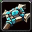
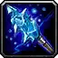
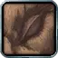

Discipline Priest guide – WoW ForeverDiscipline Priest in the calculator Race picker
Where the points go
DisciplineHolyShadow
Key talents
BuildsBest raceAll Discipline talentsFAQ
Discipline builds
Meta 2
The builds most players run.
 Discipline healer
Discipline healer
Shields and crit heals: Renewed Hope and Divine Aegis turn crits into absorbs, Penance and Power Infusion at the bottom, Holy for crit chance, faster heals and Twilight Focus against pushback.
Split 31 / 20 / 0 · level order →
PvP ✓ Nov 23Discipline/Shadow PvP
Discipline to Power Infusion for shields and mana burn, plus Shadow's Blackout stuns, Improved Mind Blast and a shorter Psychic Scream.
Split 33 / 0 / 18 · level order →
Off-meta 1
Uncommon builds that can work – try something different.
Best race for Discipline Priest
Top-scoring race from our racial scores: Horde first, Alliance below.
| Spec | Leveling | Dungeons & raids | PvP |
|---|---|---|---|
| Discipline healer | Troll Night Elf | Undead Human | Undead Gnome |
All Discipline talents
Tap a level to see its talents with their in-game text.
Level 10+

 3
3
- Power in Light Level 10 · 5 ranks
Smite and Penance deal 10% more damage to targets with your Holy Fire or Shadow Word: Pain.
- Wand Specialization Level 10 · 2 ranks
Wand damage +25%.
- Twin Disciplines Level 10 · 5 ranks
Your instant spells deal 5% more damage and healing.
Level 15+

 4
4
- Silent Resolve Level 15 · 3 ranks
30% less threat, and Stun, Fear and Silence effects on you are 15% shorter.
- Holy Precision Level 15 · 3 ranks
+18% hit chance with Holy spells.
- Mental Strength Level 15 · 5 ranks
10% more Intellect.
- Martyrdom Level 15 · 2 ranks
Melee and ranged crits against you have a 100% chance to give Focused Casting for 6 sec, and you resist interrupts 20% better.
Level 20+

 4
4
- Mental Agility Level 20 · 3 ranks
Smite, Holy Fire and your instant spells cost 10% less mana.
- Inner Focus Level 20 · 1 rank
Your next spell costs no mana and, if it isn't a periodic effect, gets +25% crit chance. 3 min cooldown.
- Improved Power Word: Shield Level 20 · 3 ranks
Power Word: Shield absorbs 20% more.
- Meditation Level 20 · 3 ranks
50% of your mana regeneration continues while casting.
Level 25+

 3
3
- Improved Inner Fire Level 25 · 3 ranks
Inner Fire gives 45% more armor and 12 more charges.
- Improved Mana Burn Level 25 · 2 ranks
Mana Burn casts 1 sec faster.
- Soul Warding Level 25 · 1 rank
Power Word: Shield has a 4 sec shorter cooldown and costs 15% less mana.
Level 30+
 2
2
- Penance Level 30 · 1 rank
2 sec channel: 45 Holy damage to an enemy or 134 healing to an ally every second. 150 mana, 36 yd, 12 sec cooldown.
- Renewed Hope Level 30 · 5 ranks
Flash Heal, Lesser Heal, Heal, Greater Heal and Penance get +10% crit chance on targets with Weakened Soul, and Weakened Soul is 5 sec shorter.
Level 35+ 1
1
- Divine Aegis Level 35 · 3 ranks
Non-periodic critical heals also shield the target for 15% of the heal (max 1,200 damage) for 12 sec.
Level 40+1
- Power Infusion Level 40 · 1 rank
+20% spell damage and healing for 15 sec. 3 min cooldown.
Discipline Priest FAQ
What is the best Discipline Priest build in WoW Forever?
Our main Discipline build is Discipline healer (31 / 20 / 0), with a level-by-level order from 10 to 60.
What is the best race for Discipline Priest?
For dungeons and raids our racial scores pick Undead (Horde) and Human (Alliance). Leveling: Troll / Night Elf. PvP: Undead / Gnome. See why in the race picker.
How should a Priest level in WoW Forever?
Our Priest leveling build is Shadow leveling (15 / 0 / 36), with the exact point for every level from 10 to 60.
Is there an off-meta Discipline build?
Yes: Smite priest (Holy damage) – uncommon, but it can work.
Other Priest specs: Holy Priest · Shadow Priest